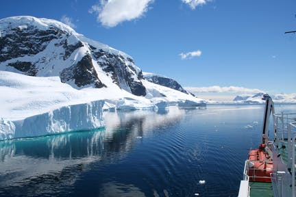
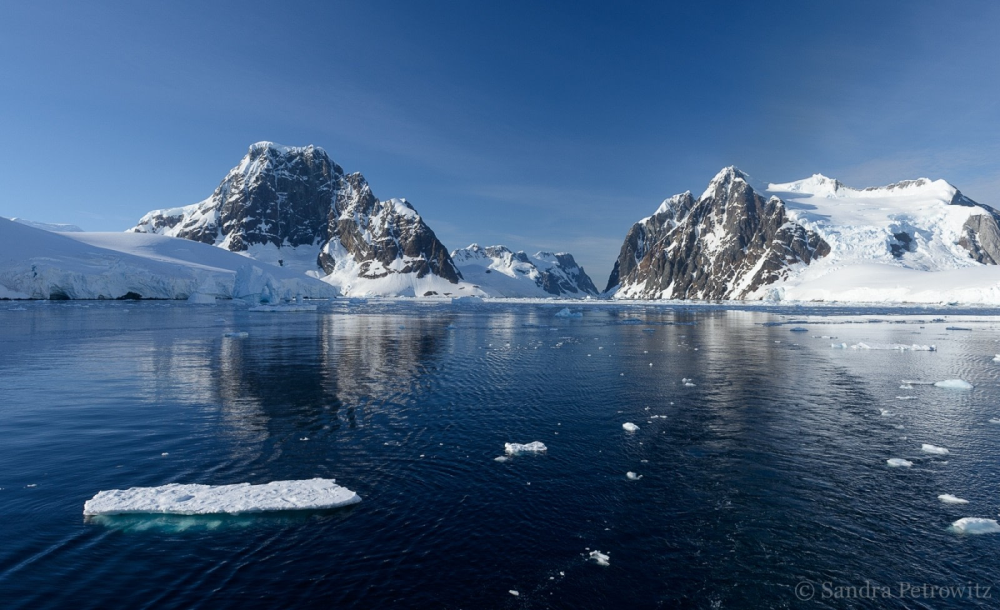
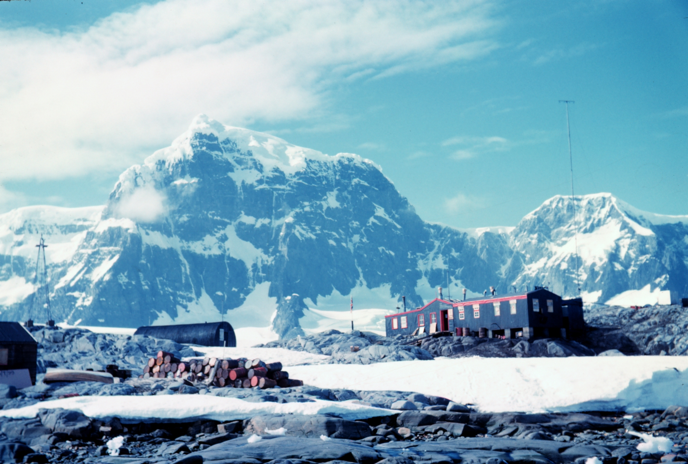

Antarctica-The Top 3
Antarctic Peninsula
This is the northernmost part of Antarctica and is home to a large array of polar wildlife. It comprises iceberg strewn waterways along with narrow passages which are frequented by expedition cruises with landings made on natural harbours and outlying islands of the Antarctic Peninsula. Tourists visit the peninsula for the breathtaking scenery with a combination of expansive skies, towering glaciers. Apart from being a visual treat to the eyes, the place is also popular for penguin rookeries along with cormorant colonies. The migration season offers varied opportunities to spot Minke, humpback and killer whales at closer proximity.
Lemaire Channel
A trip to Antarctica is incomplete without cruising along the stunning Lemaire Channel. Glaciers, icebergs and sheer cliffs dominate the area which lies above the water. With these wonderful creations lying above, humpback whales and behemoths lie below. While on your expedition to this gorgeous place, keep an eye out for orcas as well. The channel is completely precarious with being 1600m narrow and having plenty of loose icebergs. A heaven for the photographers, the scenery offers a breathtaking mirror view which is almost a dream to the photographers.
Port Lockroy
A natural harbour located on the north-western shore of Wiencke island is one of the most popular places to visit. The tourist spot makes way for being one of the most popular tourist destinations for a large array of cruise-ship passengers in Antarctica. This is a natural harbour that was originally used for whaling and then in the form of a military base during the time of the Second World War. This was soon followed by the place being used as a research station. The port is now a historic site consisting of post office and museum with being a popular halt point for travellers exploring Antarctica. Half of Wiencke Island is now closed for the tourists as only penguins are allowed to thrive.